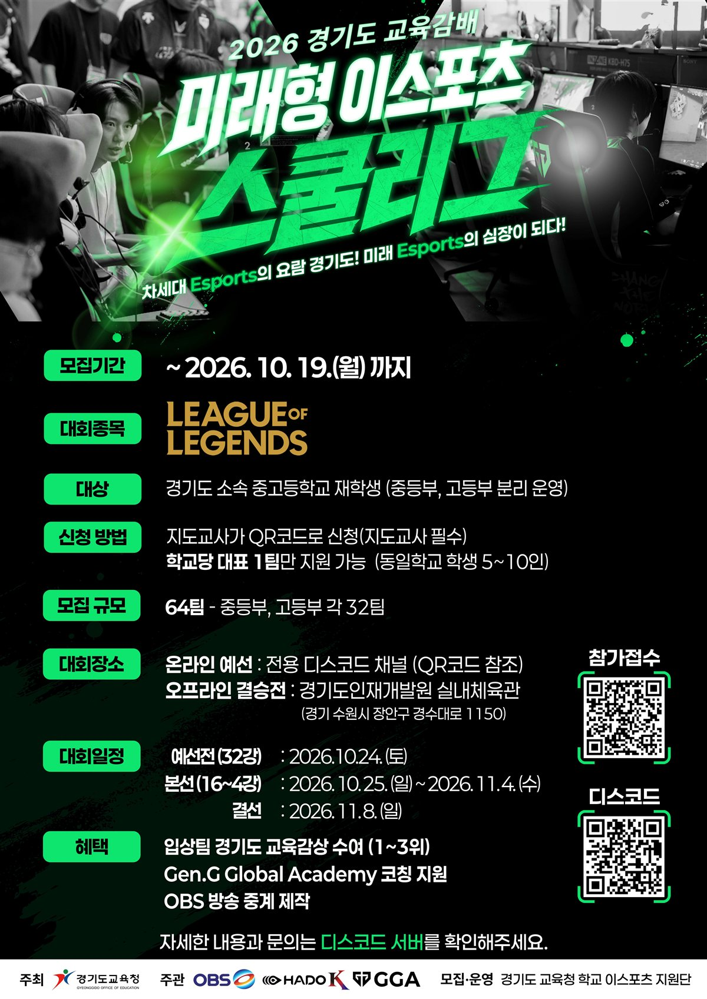

2026 경기도 교육감배
미래형 이스포츠 스쿨리그
경기도 중·고등학생이 학교 대표 팀으로 겨루는 온라인 리그입니다. 결승 전까지는 디스코드로 온라인 진행하고, 1~4위전은 오프라인에서 열립니다.
한국 시간 기준으로 오늘 날짜에 맞춰 자동 계산됩니다.
대회 소개
대회 개요와 혜택을 한눈에 확인하세요.

대회 포스터
포스터를 누르면 크게 볼 수 있습니다. 포스터의 참가접수 QR로 신청하고, 디스코드 QR로 대회 서버에 입장하세요.
포스터 발행 이후 바뀐 내용
- 모집 마감이 10/12에서 10/19(월)로 연장되었습니다.
- 지도교사는 필수가 아닙니다. 있을 때만 신청서에 작성합니다.
- 대회명
- 2026 경기도 교육감배 미래형 이스포츠 스쿨리그
- 종목
- 리그 오브 레전드 (LEAGUE OF LEGENDS)
- 참가 대상
- 경기도 소속 중·고등학교 재학생 (중등부, 고등부 분리 운영)
- 모집 규모
- 중등부 32팀, 고등부 32팀
- 주최
- 경기도교육청
- 주관
- OBS, HADO K, GGA
- 운영
- 경기도 교육청 학교 이스포츠 지원단
혜택
- 입상팀(1~3위) 경기도 교육감상 수여
- Gen.G Global Academy 온라인 코칭 (10/17~대회 종료·탈락 시까지, 학교당 최대 3회, 회당 80분, 팀장이 디스코드 [GGA-코칭-지원] 채널에 선착순 신청 → 젠지 코치 배정)
- 결승전·3/4위전 OBS 방송 중계
경기 장소
- 결승 전까지: 전용 디스코드 채널(온라인)
- 1~4위전: 경기도인재개발원 실내체육관
경기 수원시 장안구 경수대로 1150
대회 일정
세부 경기 시간과 대진표는 모집 마감(10/19) 이후 확정되어 공지사항으로 안내됩니다.
대진표
중등부·고등부 각 32팀이 예선 조별리그(8개 조)를 거쳐, 조 1·2위 16팀이 장로·바론 두 그룹으로 나뉘어 더블 엘리미네이션으로 겨룹니다. 그룹마다 1·2위 4팀이 11/8 결선에 오릅니다.
4팀 1조 조별리그, bo1 본선 16강~4강 · 10/25~11/4
더블 엘리미네이션 결선 1~4위전 · 11/8(일)
오프라인
예선 순위는 승 → 득실(세트) → 맞대결 순으로 정합니다. 32팀이 채워지지 않으면 3위 팀도 승급할 수 있으며, 조 편성·그룹 배치·세트 방식 등 세부 방식은 10/19 이후 확정됩니다.
경기 규정
공식 규정집(Ver 1.0)과 팀장 교육 내용을 카드로 정리했습니다. 카드를 좌우로 넘기고, "자세히 보기"로 세부 내용을 확인하세요.
🏆 대회 구성 (규정집)
| 구분 | 방식 |
|---|---|
| 32강~16강 | 단판 |
| 8강 | 3판 2선승 |
| 4강 | 3판 2선승 |
| 결승 | 3판 2선승 |
모집 인원과 일정에 따라 바뀔 수 있습니다.
지원단 최종 확인 중규정집은 "싱글 토너먼트", 공식 FAQ·팀장 교육은 "더블 엘리미네이션"으로 안내되어 있습니다.
🟨 경고·벌칙 (규정집 제9조)
누적 경고는 결승 전에 초기화됩니다.
지원단 최종 확인 중팀장 교육에는 경고 1~4회 단계(진영 제한 → 밴카드 제한 → 몰수패)가 따로 안내되어 있습니다.
⏰ 지각 벌칙 (규정집 제9조)
팀장 교육: 30분 넘게 미입장 시 경고 1회, 1시간 초과 시 경고 2회 몰수패.
전적 검색
학교 이름을 검색하면 라인별 선수 이름과 LOL 아이디가 나옵니다. 아이디를 누르면 그 선수의 전적이, '멀티서치'를 누르면 팀 전체 전적이 fow.lol 새 창에서 바로 열립니다.
불러오는 중…
경고 현황
심판 선생님이 기록한 팀별 주의·경고입니다. 규정집 제9조에 따라 주의 2회는 경고 1회로 보고, 누적 경고 2회는 세트 패배, 3회는 실격입니다. 판정 이의는 경기 후 디스코드로 제기해 주세요.
불러오는 중…
젠지(GGA) 코칭 일정
Gen.G Global Academy 코치님의 코칭 일정입니다. 참가 신청이 끝난 학교마다 최대 3회, 팀장이 공식 디스코드 [GGA-코칭-지원] 채널에 선착순으로 신청하면 젠지 코치님들이 보고 배정합니다. 시작 10분 전까지 음성 채널에 접속해 주세요.
불러오는 중…
참가 신청
모집 마감: 2026.10.19.(월) (처음 안내한 10/12에서 연장)
신청 절차
- 학교 안에서 대표 팀 1팀을 정합니다. (선발전 또는 최대 10명으로 합치기)
- 포스터 QR 또는 안내된 구글폼 링크로 신청합니다. QR이 안 찍히면 링크를 이용하세요.
- 팀장 정보(생년월일·전화번호·학번)와 선수별 아이디·최고 티어·라인을 적습니다.
- 디스코드에 팀원 전원이 입장한 뒤 "권한 신청방"에서 권한을 요청합니다.
- 내용 확인 후 최종 참가 여부와 세부 일정이 별도로 안내됩니다.
팀 구성 규칙
- 5인 1팀, 팀장 1명, 후보 포함 최대 10명
- 같은 학교 학생만 (학년은 상관없음), 학교당 1팀
- 지도교사는 필수가 아니며, 있을 때만 신청서에 작성
- 신청서에 낸 라인이 고정 (예비 선수 포함)
- 등록한 계정만 사용 가능 (부계정 사용은 사전 승인 필요)
디스코드 안내
- 대회 참여와 의사소통은 디스코드로 진행합니다.
- 표시 이름: "[학교] 이름 / 팀장" 형식
- 개별 DM은 자제하고 질문방에 남겨 주세요.
신청 후 티어·닉네임·라인만 바뀐 경우에는 신청서를 다시 내지 않고 팀장 대화방에 남깁니다.
질문/FAQ
공식 FAQ와 디스코드 질문방의 선생님 답변(10분마다 갱신)을 바탕으로 답해 드립니다. 찾는 답이 없으면 지원단 문의 방법을 안내해 드려요.